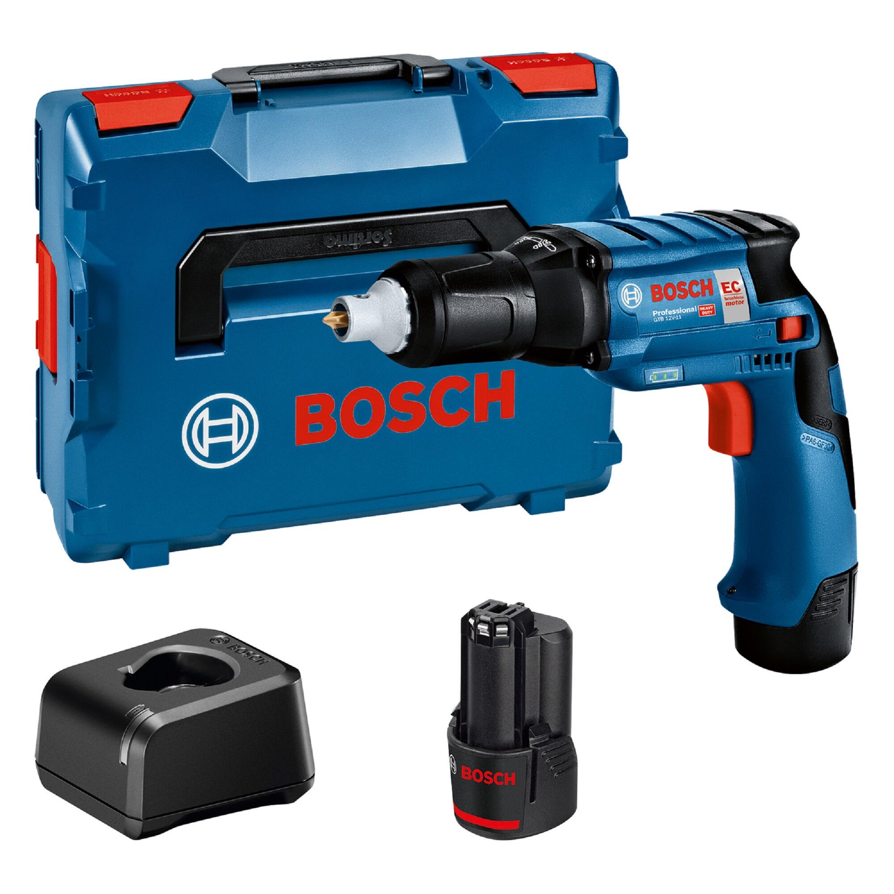

Atornillador inalámbrico

Equipo compacto que facilita el ensamblaje de muebles, la instalación de accesorios y otros trabajos de fijación. Su control de velocidad y torque ayuda a ajustar la fuerza aplicada al tornillo.